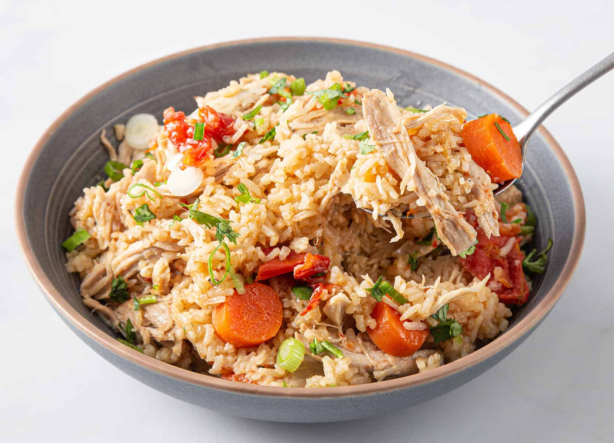

Chicken Rice
Description
This delicious and hearty one-pot meal is a favourite of mine.
Recipe makes four servings.
Ingredients
- Chicken thighs (800g)
- Chicken bone broth (1000ml)
- Onion (2 cups chopped)
- Carrots (2 cups chopped)
- Okra (2 cups chopped)
- Yellow potatoes (2 cups chopped)
- Avocado oil (2 tbsp)
- Kosher salt
- Ground black pepper
- White jasmine rice
- Frozen peas
Steps
- Add bone broth and chicken thighs to crockpot or instant pot (optional: brown chicken thighs in pan for 90 seconds per side).
- Add chopped onions, carrots, okra, potatoes to pot.
- Season liberally with salt.
- Add avocado oil.
- Set crockpot, instant pot, or other slow cooker device to 6-8hrs on low setting.
- Add frozen peas 15 minutes before slow cooker is done.
- Cook rice separately and combine with other slow cooker contents.